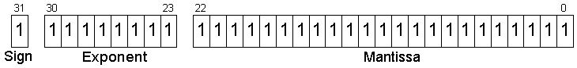
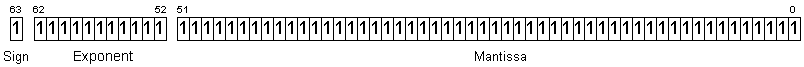

"There are two ways of constructing a software design; one way is to make it so simple that there are obviously no deficiencies, and the other way is to make it so complicated that there are no obvious deficiencies. The first method is far more difficult." -- C. A. R. Hoare
Background
All floating-point numbers consist of three parts:
Number Sign Mantissa Exponent 3.763 x 103 + 3.763 3 1.2345 x 10-11 + 1.2345 -11 -4.45 x 105 - 4.45 5 -2.6795 x 10-7 - 2.6795 -7
Representing the value 12,345 in decimal:
Notes:
Number Sign Mantissa Exponent 12345 x 100 + 12345 0 1234.5 x 101 + 1234.5 1 123.45 x 102 + 123.45 2 12.345 x 103 + 12.345 3 1.2345 x 104 + 1.2345 4 .12345 x 105 + .12345 5 .012345 x 106 + .012345 6
IEEE 754
The IEEE (Institute of Electrical and Electronics Engineers) sets the standard for floating point arithmetic. This standard specifies how single precision (32 bit) and double precision (64 bit) floating point numbers are represented and how arithmetic should be carried out on them.32-bit single-precision

Parts:
Binary Actual exponent (decimal) ------------------------------------------ 01111111 0 (127 - 127) 10000000 1 (128 - 127) 10000010 3 (130 - 127) 01111100 -3 (124 - 127) 00000000 -127 ( 0 - 127) This is a special case 11111111 128 (255 - 127) This is a special case
Decimal Binary --------------------------------------------- 0.65625 0 01111110 01010000000000000000000 -0.65625 1 01111110 01010000000000000000000 0.2 0 01111100 10011001100110011001101 -0.2 1 01111100 10011001100110011001101
64-bit double-precisionZero 0 00000000 00000000000000000000000 = +0 (sign is 0, exponent is 0, mantissa is 0) 1 00000000 00000000000000000000000 = -0 (sign is 1, exponent is 0, mantissa is 0) 0 00000000 00100000000000000000000 = Dirty zero (sign is 0 or 1, exponent is 0, mantissa is non-zero) INF - Infinity 0 11111111 00000000000000000000000 = +Infinity (sign is 0, exponent is 255, mantissa is 0) 1 11111111 00000000000000000000000 = -Infinity (sign is 1, exponent is 255, mantissa is 0) NAN - Not a Number 0 11111111 10000100000000000000000 = Quiet NaN (sign is 0 or 1, exponent is 255, mantissa is non-zero, MSB of mantisaa is 1) 0 11111111 00100010001001010101010 = Signaling NaN (sign is 0 or 1, exponent is 255, mantissa is non-zero, MSB of mantissa is 0)

Constructing Numbers
Given the decimal number 3045.125:
3045.125 = (3*1000) + (0*100) + (4*10) + (5*1) + (1/10) + (2/100) + (5/1000)
= (3*103) + (0*102) + (4*101) + (5*100) + (1*10-1) + (2*10-2) + (5*10-3)
= 300 + 0 + 40 + 5 + .1 + .02 + .005
10110111.1011 = (1*128) + (0*64) + (1*32) + (1*16) + (0*8) + (1*4) + (1*2) + (1*1) + (1/2) + (0/4) + (1/8) + (1/16)
10110111 = (1*27) + (0*26) + (1*25) + (1*24) + (0*23) + (1*22) + (1*21) + (1*20)
= 128 + 0 + 32 + 16 + 0 + 4 + 2 + 1
.1011 = (1*2-1) + (0*2-2) + (1*2-3) + (1*2-4)
= .5 + 0 + .125 + .0625
10110111.10112 = 183.687510
Decimal Decimal
Binary fraction value
-----------------------------------
.1 1/2 .5
.01 1/4 .25
.001 1/8 .125
.0001 1/16 .0625
.00001 1/32 .03125
.000001 1/64 .015625
etc...
Binary Decimal (fraction) Decimal
-------------------------------------------------
1.1 1 1/2 1.5
1.101 1 5/8 1.625
101.001 5 1/8 5.125
1001.0101 9 5/16 9.3125
0011.10101 3 21/32 3.65625
PointsBinary Normalized Exponent (decimal) Exponent (IEEE 754 binary) ----------------------------------------------------------------------------- .11011 1.1011 -1 01111110 (12610) 1100.101 1.100101 3 10000010 (13010) 1010.1 1.0101 3 10000010 (13010) 100110 1.00110 5 10000100 (13210) .00010101 1.0101 -4 01111011 (12310) 1.001 1.001 0 01111111 (12710)
Bit Decimal Decimal
Position Exponent Fraction Number
------------------------------------------------------------------
1 1/21 1/2 0.5000000000000000000000000
2 1/22 1/4 0.2500000000000000000000000
3 1/23 1/8 0.1250000000000000000000000
4 1/24 1/16 0.0625000000000000000000000
5 1/25 1/32 0.0312500000000000000000000
6 1/26 1/64 0.0156250000000000000000000
7 1/27 1/128 0.0078125000000000000000000
8 1/28 1/256 0.0039062500000000000000000
9 1/29 1/512 0.0019531250000000000000000
10 1/210 1/1024 0.0009765625000000000000000
11 1/211 1/2048 0.0004882812500000000000000
12 1/212 1/4096 0.0002441406250000000000000
13 1/213 1/8192 0.0001220703125000000000000
14 1/214 1/16384 0.0000610351562500000000000
15 1/215 1/32768 0.0000305175781250000000000
16 1/216 1/65536 0.0000152587890625000000000
17 1/217 1/131072 0.0000076293945312500000000
18 1/218 1/262144 0.0000038146972656250000000
19 1/219 1/524288 0.0000019073486328125000000
20 1/220 1/1048576 0.0000009536743164062500000
21 1/221 1/2097152 0.0000004768371582031250000
22 1/222 1/4194304 0.0000002384185791015625000
23 1/223 1/8388608 0.0000001192092895507812500
32 bits: ----------------------------------------------------------- 0 01111100 10011001100110011001100 --> 0.199999988079071045 0 01111100 10011001100110011001101 --> 0.200000002980232239 64-bits ------------------------------------------------------------------------------------------- 0 01111111100 1001100110011001100110011001100110011001100110011001 --> 0.199999999999999983 0 01111111100 1001100110011001100110011001100110011001100110011010 --> 0.200000000000000011
Calculating bits for: 0.2
1 -----------------------------
2 -----------------------------
3 subtract this: 0.125000000000
new value: 0.075000002980
4 subtract this: 0.062500000000
new value: 0.012500002980
5 -----------------------------
6 -----------------------------
7 subtract this: 0.007812500000
new value: 0.004687502980
8 subtract this: 0.003906250000
new value: 0.000781252980
9 -----------------------------
10 -----------------------------
11 subtract this: 0.000488281250
new value: 0.000292971730
12 subtract this: 0.000244140625
new value: 0.000048831105
13 -----------------------------
14 -----------------------------
15 subtract this: 0.000030517578
new value: 0.000018313527
16 subtract this: 0.000015258789
new value: 0.000003054738
17 -----------------------------
18 -----------------------------
19 subtract this: 0.000001907349
new value: 0.000001147389
20 subtract this: 0.000000953674
new value: 0.000000193715
21 -----------------------------
22 -----------------------------
23 subtract this: 0.000000119209
new value: 0.000000074506
binary: 0.00110011001100110011001